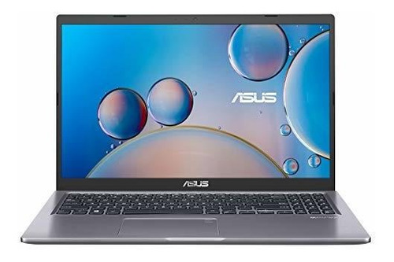
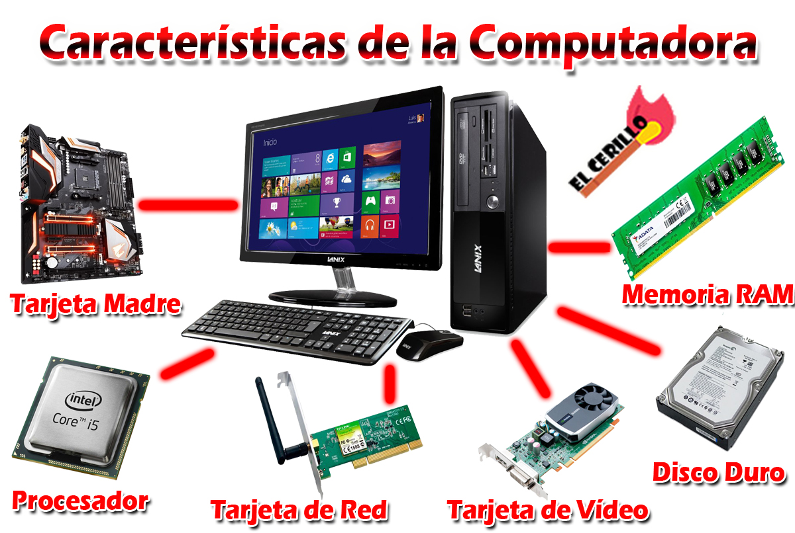

¿CARACTERÍSTICAS Y PARÁMETROS PARA LA COMPRA DE COMPUTADORES
A la hora de comprar un ordenador, las principales variables a
tener en cuenta son las siguientes:
Procesador.
Disco duro.
Memoria RAM.
Tarjeta gráfica.
Duración de la batería (En los portátiles).
Peso (En los portátiles).
Tamñano pantalla/Monitor.

Procesador: La marca más reputada y conocida es Intel.
Identificarás sus diferentes versiones con la letra ‘i’ seguida de
un número. A partir de ‘i5’ está bien, la versión más reciente es
‘i7’. Además, fíjate en la velocidad, que se mide en Ghz
(gigahercios). En torno a 3 Ghz está muy bien. Intel tiene una
marca 'barata', Celeron, de prestaciones más bajas, a la que
puedes recurrir si tu presupuesto es apretado. Además están los
ordenadores AMD, un poco más baratos pero también de menor calidad
que los Intel. Si puedes pagarlo, opta por un Intel; si necesitas
algo más barato, un AMD. Y si andas realmente ajustado de dinero,
elige un Celeron.
Disco duro: El disco duro marca la capacidad de
almacenamiento de tu equipo. 500 GB es más que suficiente para un
uso casero. Hay pcs con 1 TB (terabyte), pero no necesitas tanto a
no ser que quieras guardar en tu ordenador las 35 temporadas de
tus series favoritas (y ni con eso lo llenarías).
Memoria RAM: La memoria RAM crea mucha confusión porque
para memoria ya tenemos el disco duro, ¿no? Pues no: la RAM es
otro tipo de memoria y muy importante, por cierto. Cuanta más
memoria RAM tenga tu ordenador, más capacidad tendrá para ejecutar
diferentes programas a la vez y con mayor rapidez. Se mide en GB
(gigabytes): 4 está bien, 8 muy bien.
Tarjeta gráfica: No te compliques la vida. Para un uso
estándar no necesitas una tarjeta gráfica espectacular. Cualquiera
de las marcas Radeon o Nvidia te dará un gran servicio.
Duración de la batería: Si has pensado en un portátil, es
fundamental la duración de la batería. Hoy se habla de baterías
con un número determinado de celdas. Cuantas más celdas, mayor
duración. A partir de seis horas está bien.
Peso: Fundamental si vas a llevarte el portátil a todas
partes. El peso es una variable que suele encarecer el portátil.
Los modelos ultrabook son súper ligeros y finos, si vas a estar
cargando con él todo el día quizás te interesen. Por lo demás, los
portátiles tienden a ser cada vez más ligeros. Fíjate cuánto pesan
los equipos que te interesen y tenlo en cuenta a la hora de
decidir.
Tamaño de pantalla/Monitor: En la misma línea, un portátil
pequeño pesa mucho menos que uno de gran pantalla. La decisión
aquí depende del uso que vayas a darle. Si has pensado utilizarlo
para ver películas, desde luego no elijas uno de 10 pulgadas… Pero
si necesitas un portátil para moverlo mucho y utilizar, por
ejemplo, programas de oficina, puede venirte muy bien uno de
pantalla reducida. Si compras un pc, la elección del monitor
también es importante. En materiales, lo último es el LED frente
al tradicional LCD. Cuida más nuestra vista y es más respetuoso
con el medio ambiente. Y en calidad de Imagen, tendrás que fijarte
en su resolución. A partir de 720 píxeles verticales se consideran
HD, alta definición, y a partir de 1080, Full HD.
Ten cuidado con el tamaño del monitor no sirve de nada tener muchas
pulgadas si luego la resolución de la Imagen proyectada es baja. Se
recomiendan monitores de hasta 23’’ para evitar el efecto pixelado
que provocan las imágenes con poca resolución. Si tu monitor es HD o
Full HD y la Imagen no lo es, lo verás como en la parte derecha de
la Imagen y cuanto más grande sea el monitor, peor. Resumiendo a la
hora de comprar un ordenador pregúntate para qué lo quieres. No
tiene sentido comprar un Ferrari para ir a hacer la compra. Pregunta
por el procesador, el disco duro, la memoria RAM y la tarjeta
gráfica. Y si compras un portátil, vigila la duración de la batería
y el peso y tamaño de la pantalla.
